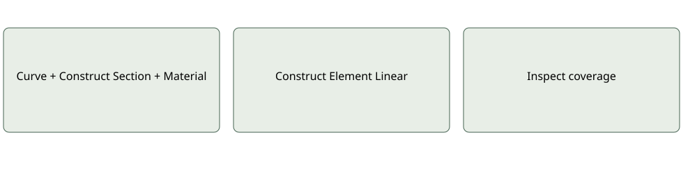

Development documentation · November 2026
CNC-prepared timber façade cassettes

Connect
Curve + Construct Section + Material → Construct Element Linear
Author and interpret
Two columns each 2.6 m × .15 × .15 = .0585 m³. Two beams each 2 m × .15 × .20 = .06 m³. Assumed density 450 kg/m³. Actual saved timber reference is 1 m³ with missing GWP factor; four impacts are null. Quantity calculation is not structural approval.
Coverage check
Inspect Result for units, supplier coverage, factor context and missing contributions. Available numerical impacts are not proof of scientific completeness.
Component contracts · Example status


Recommended next architectural study
Compare repeated plywood-faced timber cassettes with individually machined ribs, using the same facade area and performance requirements. RAW can measure net plate solids and frame axes, then allocate evidenced machining energy. It does not design joints or certify structural capacity.
Technical references — not RAW outputs
- BUGA Wood Pavilion 2019, ICD/ITKE Stuttgart: computationally designed and robotically fabricated timber segments; relevant to geometry-specific manufacturing records.
- Landesgartenschau Exhibition Hall 2014, University of Stuttgart: prefabricated timber plate construction; relevant to measured plate quantities and machining boundaries.
Proposed RAW calculation
- Author net plates, rib axes and stock dimensions externally.
- Select board/timber data with declared units and biogenic context.
- Use Volume elements for plates; Construct Section + Linear elements for constant-section ribs.
- CNC/Milling Process takes measured energy or evidenced power/time, with explicit batch basis.
- Assign Process Impact only when machining is additional to the EPD and compatible in method and scope; otherwise retain it separately as pending.
- Element GWP → Breakdown → Colour Preview. Compare equivalent m² of facade.
Next example
Three cassettes, editable ribs/plate thickness, one CNC batch and explicit net/stock/waste quantities. Doubling count must double quantities; changing allocation must preserve batch energy. Irregular ribs use measured solids, not a false constant section. Offcut credits, toolpath generation and structural checks remain external.